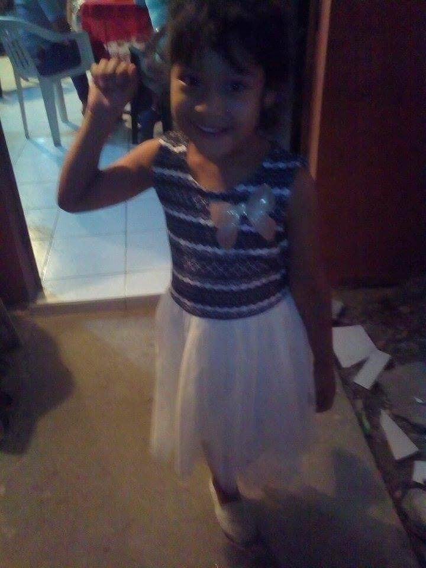
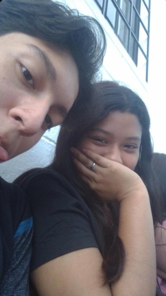
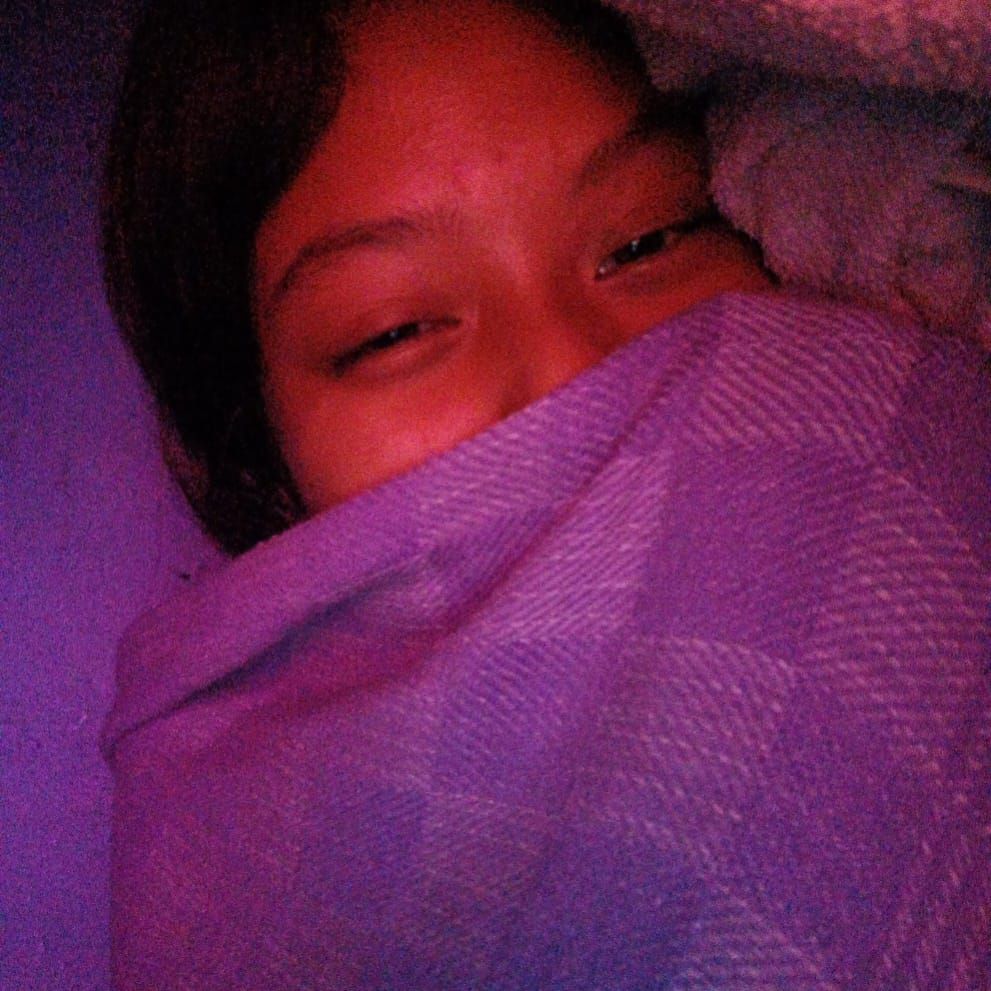
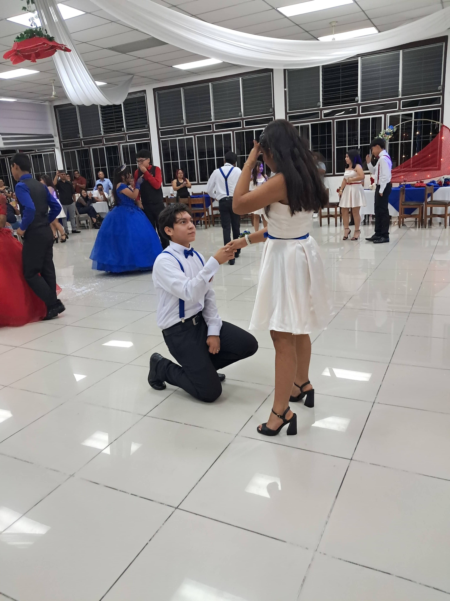
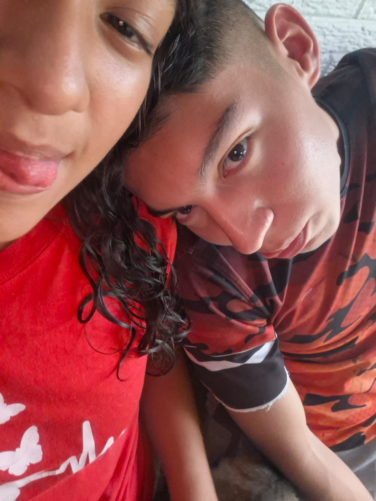
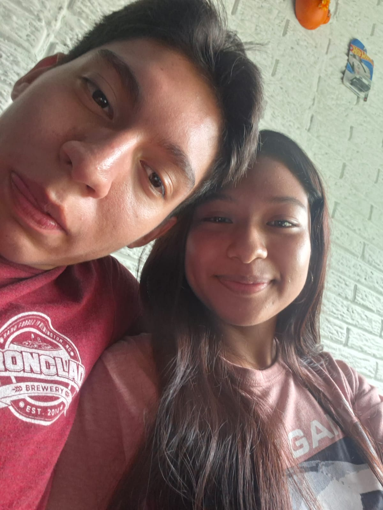
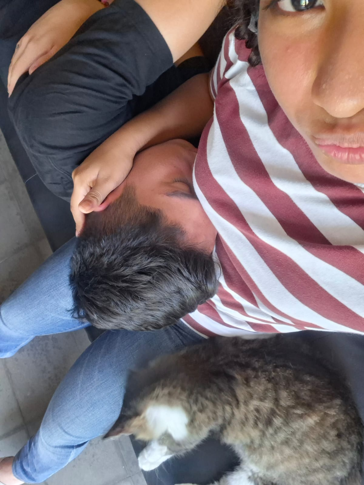
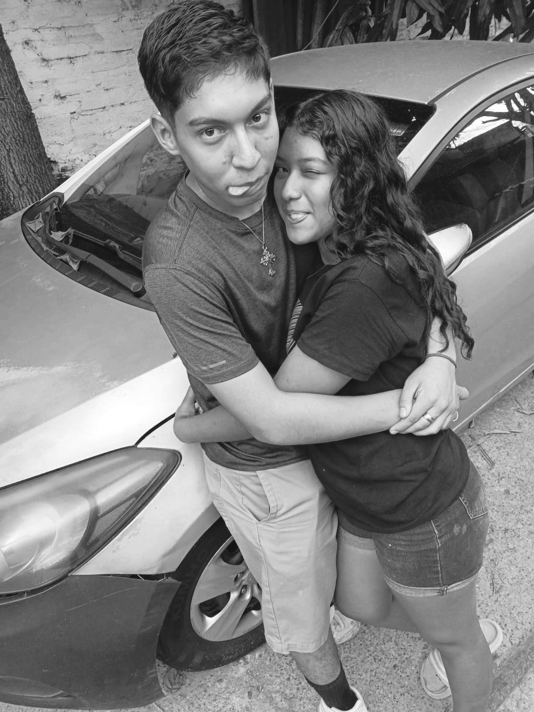

quiero ser diferente, salir de lo comun asi que hice esto con muchor amor

esa niña es muy posible que nunca se imaginara lo que pasaria en un par de años,que conoceria a alguien con el que estarian mucho tiempo juntos
y pues en mi caso yo no esperaba encontara alguien que me entendiera tal como soy, que me aceptara, para mi se habia hecho costumbre estar solo por vario tiempo a pues divertirme solo

Nos conocimos en un momento extraño por asi decirlo,quiza ninguno de los dos buscaba nada en ese momento, y quiza no era de su total agrado, pero hubo algo una quimica
Empezamos hablar poco apoco nos hicimos amigos en un cierto momento me regalo un anillo que lo empezamos a compartir,pocas semanas despues, no pude ocultar que me gustaba, me enamore de ella de una manera que no puedo explicar, y el 24 de junio de 2024 le pedi que fuera mi novia con miedo de su respuesta, pero para mi sorpresa dijo... si
Nos fuimos conociendo mas, pedi permiso para ser su novio, pues vi que le cai bien a la familia,me fui enamorando de ella cada dia mas la vi de todas formas despeinada, recien levantada, llorando, de mal humor, sin bañarse jsjsjs, la vi de muchas formas, y me enamoraba como era, lo genuina que era conmigo, no fue facil por que costaba que hablara como sentia, pero le hice una promesa,que no imprtaba cuanto costara pero iba a entarar hasta el fondo de su corazon y que ahi me iba a quedar, que iba a ver unas manos dispuestas a sagrar por ella

como dije la vi de muchas formas, nos conocimos tan bien que sabia cuado yo no estaba bien se daba cuenta, aun ahora no puedo ocultarselo me conoce hasta mas de lo que yo me conozco

Dato curioso fue con la primera persona con la que baile ha sido la primera en tantas cosas, fue la primera con la que pase un 24 de diciembre y un 31 lo mas hermoso que me a pasado
Como toda pareja tubimos problemas y mas por ser jovenes aveces por no entendernos por no querer decir como nos sentiamos, pero hubo algo que lo quebro todo problemas externos dejarnos de hablar por tiempos, pero hubo un error que cometi, que pues aun duele, de mediados de noviembre del año pasado mi vida se sentia tan vacia, diciembre fue una tortura completa perdi a la unica persona que me aceptaba tal cual,perdi todo lo que amaba por un error, el 24 de diciembre quice hablarle pero no pude, tenia miedo, fue un 24 en el que no paso nada en mi, sabia que me hacia falta algo, un te amo de ella, el 31 me senti en un punto de quiebre horrible, no pude mas y como pude le escribi, con el arrepentimiento como de un niño chiquito hacia sus papás, me arrepenti genuinamente, no esperaba su perdon pero queria que supiera que la amaba con toda mi alma
Mi proceso en la beca empezo pero me hacia falta quien me impulsara,claro nadie supo en vacio que tenia en el pecho ni a quienes consideraba mis amigos nadie sabia que la extrañaba con toda mi alma cada dia sin ella era un infierno dentro de mi cabeza
pero no podia seguir sin ella, asi que como pude me llene de valor para hablarle y que me diera una oportunidad mas,y sorpresa dijo que si, senti que todo volvia a mi, dije que no la defraudaria de esta oportunidad que me dio, que le iba a demostrar que no se equivoco
tratando de demostrarle que no se equivoco conseguimos los dos años desde que nos hicimos novios,seguimos aprediendo uno del otro ahora tenemos mas confianza cerca de cumplir sus 15 años hemos conseguido muchas cosas juntos


Nadie dijo que seria facil pero el vivirlo con ella es lo meejor conocernos, crecer juntos y poder decir que en una generacion que olvido lo que era amor, nosotros podemos decir que fuimos la esepccion
y enserio que amo estar con mi niña, pedi otra oportunidad en la que dare todo por ella y no me cansare de intentarlo


esta niña me cambio la vida totalmente hace que mejore, mejoro por ella por que quiero lo mejor para ella quiero, quiero que este bien cuidarla y mimarla,porque es mi niña pequña y de quien tanto te e hablado
Te amo mucho mi niña, enserio te amo mami